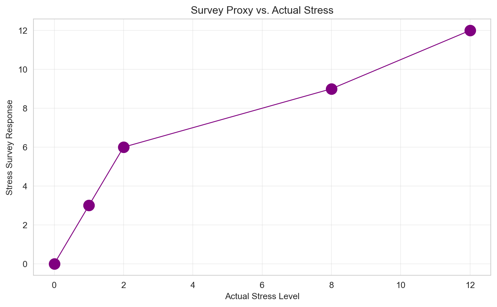
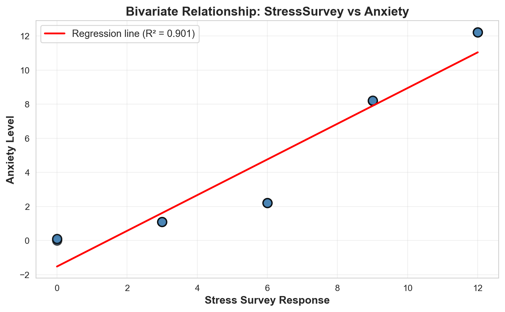
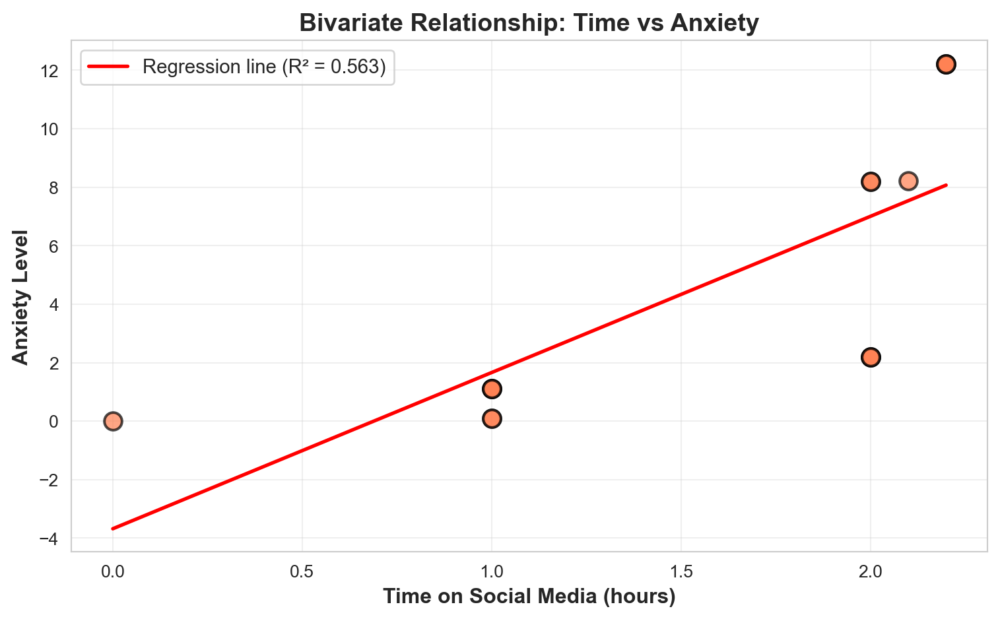
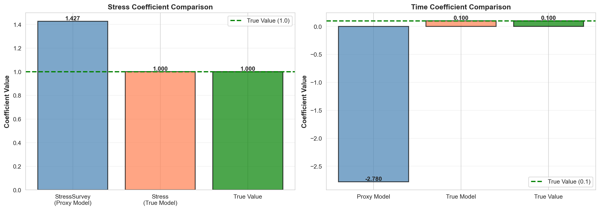
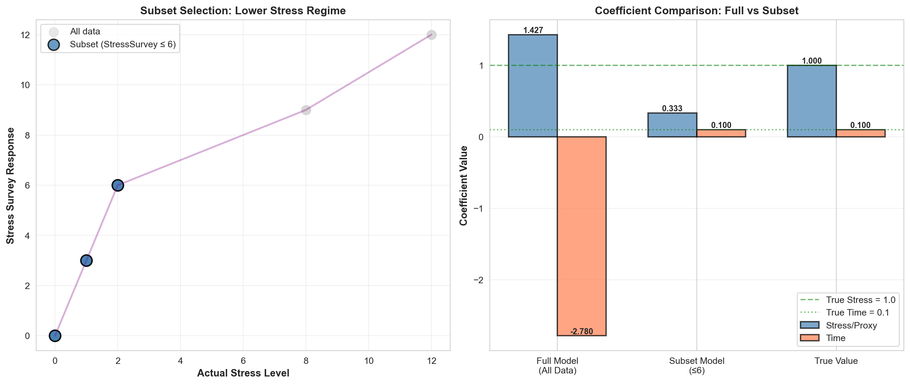
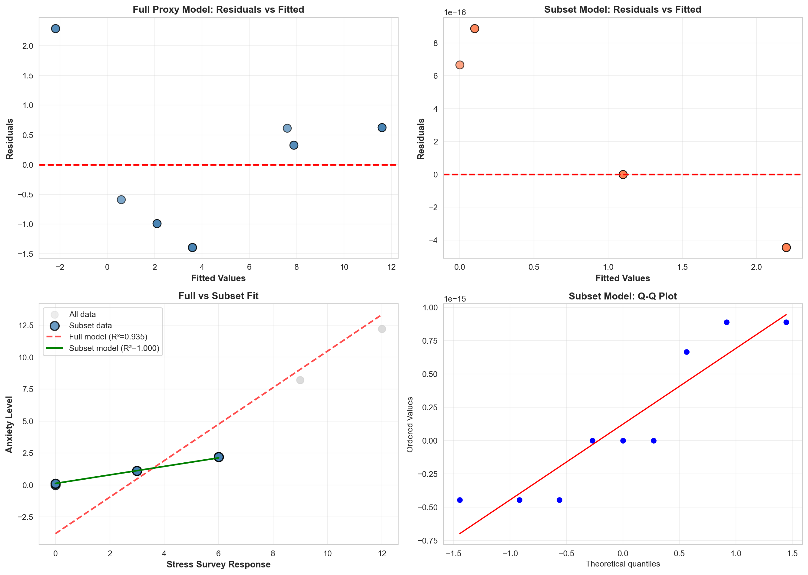

| Stress | StressSurvey | Time | Anxiety | |
|---|---|---|---|---|
| 0 | 0 | 0 | 0.0 | 0.00 |
| 1 | 0 | 0 | 1.0 | 0.10 |
| 2 | 0 | 0 | 1.0 | 0.10 |
| 3 | 1 | 3 | 1.0 | 1.10 |
| 4 | 1 | 3 | 1.0 | 1.10 |
| 5 | 1 | 3 | 1.0 | 1.10 |
| 6 | 2 | 6 | 2.0 | 2.20 |
| 7 | 2 | 6 | 2.0 | 2.20 |
| 8 | 2 | 6 | 2.0 | 2.20 |
| 9 | 8 | 9 | 2.0 | 8.20 |
| 10 | 8 | 9 | 2.0 | 8.20 |
| 11 | 8 | 9 | 2.1 | 8.21 |
| 12 | 12 | 12 | 2.2 | 12.22 |
| 13 | 12 | 12 | 2.2 | 12.22 |
| 14 | 12 | 12 | 2.2 | 12.22 |
Regression & Interpretability Challenge
Don’t Trust Linear Models - The Perils of Non-Linearity
Interrogating Linear Regression with Non-Linear Proxies
This analysis examines the implications of using monotonic proxy variables as substitutes for true causal variables in linear regression models. Through a controlled stress–anxiety scenario, we demonstrate how seemingly reasonable proxy variables can systematically bias regression estimates despite maintaining strong statistical fit. The following sections present regression analyses, visualizations, and interpretations that address each component of the challenge requirements.
\[ \begin{aligned} A &\equiv \textrm{Anxiety Level measured by fMRI activity}\\ S &\equiv \textrm{Stress Level measured by cortisol level in blood}\\ T &\equiv \textrm{\# of minutes on social media in last 24 hours} \end{aligned} \]
Let’s assume we know the relationship among these variables is as follows:
\[\widehat{Anxiety} = StressSurvey + 0.100 \times Time,\]
Important🔍 Understanding the True Relationship: Implied Coefficients
Critical Point: Students often miss that this specific equation implies specific coefficient values in the generic multiple regression framework.
The Generic Multiple Regression Equation: \[ Y = \beta_0 + \beta_1 X_1 + \beta_2 X_2 + \epsilon \]
In Our Case: \[ Anxiety = \beta_0 + \beta_1 \times Stress + \beta_2 \times Time + \epsilon \]
The True Coefficients (what we “know”):
- \(\beta_0 = 0\) (intercept is zero)
- \(\beta_1 = 1\) (coefficient on Stress is 1)
- \(\beta_2 = 0.1\) (coefficient on Time is 0.1)
Data and Proxy Diagnostics

Analysis and Answers
Question 1: Bivariate Regression with StressSurvey
Run a bivariate regression of Anxiety on StressSurvey. What are the estimated coefficients? How do they compare to the true relationship?
======================================================================
Question 1: Bivariate Regression - Anxiety ~ StressSurvey
======================================================================
| | Estimate | Std. Error | t | p-value | 95% CI Low | 95% CI High |
|:-------------|-----------:|-------------:|-------:|-----------:|-------------:|--------------:|
| Intercept | -1.524 | nan | nan | nan | -3.051 | 0.003 |
| StressSurvey | 1.047 | 0.096 | 10.88 | 6.68e-08 | 0.839 | 1.255 |
| const | nan | 0.707 | -2.16 | 0.0504 | nan | nan |
R-squared: 0.901The estimated regression equation is:
\[\widehat{Anxiety} = -1.524 + 1.047 \times StressSurvey.\]
This model indicates that anxiety begins at −1.524 units when the survey reports zero stress, and increases by approximately 1.047 anxiety units for each one-unit increase in the survey response. The model demonstrates strong statistical fit with an \(R^2\) of 0.901, indicating that the linear regression line closely approximates the observed data. However, this apparent success masks a fundamental problem: the survey instrument serves as a proxy for the true cortisol-based stress measurement, and the relationship between the proxy and true stress is non-linear, accelerating more rapidly at higher stress levels. To accommodate this non-linearity while maintaining linearity assumptions, the regression model adjusts the slope coefficient above the true value of 1.0 and shifts the intercept below zero. Consequently, while the model exhibits strong fit statistics, the estimated coefficients systematically deviate from the true causal parameters.
Question 2: Visualization of Bivariate Relationship – StressSurvey
Create a scatter plot with the regression line showing the relationship between StressSurvey and Anxiety. Comment on the fit and any potential issues.

The scatter plot displays Anxiety as a function of StressSurvey responses. * The data exhibit a stepped pattern: for each true stress level, the survey instrument records three distinct anxiety observations. * The transition from survey score 9 to 12 demonstrates a more pronounced increase compared to earlier transitions, indicating non-linear scaling between the proxy measure and true stress. * The fitted regression line averages across these stepped observations, resulting in systematic over-prediction for low-stress observations and under-prediction for high-stress observations. * The high R-squared gives false confidence. The model appears perfect, but it’s estimating the wrong relationship because it’s missing a key variable. * This visualization demonstrates the geometric manifestation of non-linearity: although the proxy variable maintains a monotonic relationship with true stress, the deviation from linearity systematically biases the estimated slope coefficient, even when this bias is not immediately apparent from summary statistics.
Question 3: Bivariate Regression with Time
Run a bivariate regression of Anxiety on Time. What are the estimated coefficients? How do they compare to the true relationship?
======================================================================
Question 3: Bivariate Regression - Anxiety ~ Time
======================================================================
| | Estimate | Std. Error | t | p-value | 95% CI Low | 95% CI High |
|:----------|-----------:|-------------:|-------:|----------:|-------------:|--------------:|
| Intercept | -3.68 | nan | nan | nan | -8.504 | 1.144 |
| Time | 5.341 | 1.305 | 4.09 | 0.00127 | 2.522 | 8.16 |
| const | nan | 2.233 | -1.65 | 0.123 | nan | nan |
R-squared: 0.563Regressing Anxiety on Time produces the following model:
\[\widehat{Anxiety} = -3.680 + 5.341 \times Time,\]
with \(R^2 = 0.563\). Under this specification, the intercept suggests −3.68 anxiety units at zero social media use, which is conceptually implausible, and the slope coefficient of 5.341 indicates that each additional hour of social media use is associated with a 5.34-unit increase in anxiety. * This estimate substantially exceeds the true marginal effect of 0.1 units per hour that was specified in the data-generating process. * The discrepancy arises from omitted-variable bias: because Stress is excluded from this bivariate regression, the model attributes all stress-induced variation in anxiety to the Time variable. * This results in a coefficient estimate that is approximately 53 times larger than the true causal effect, demonstrating how confounding variables can dramatically distort regression coefficients even when the omitted variable is conceptually distinct from the included regressor.
Question 4: Visualization of Bivariate Relationship – Time
Create a scatter plot with the regression line showing the relationship between Time and Anxiety. Comment on the fit and any potential issues.

The scatter plot displays Time on social media versus Anxiety.
- The data points form vertical clusters rather than a consistent upward trajectory, indicating substantial variation in anxiety levels even when social media use remains constant.
- This vertical dispersion reflects the influence of unobserved heterogeneity—specifically, differences in true stress levels among individuals with similar social media use.
- The regression model, which does not account for stress variation, fits a steep positive slope through these clusters, attributing all observed variation in anxiety to social media use.
- This visualization illustrates why the Time coefficient is inflated: the model attempts to explain vertical variation (driven by stress differences) using only horizontal variation (time spent on social media), leading to systematic overestimation of the social media effect.
Question 5: Multiple Regression with StressSurvey and Time
Run a multiple regression of Anxiety on both StressSurvey and Time. What are the estimated coefficients? How do they compare to the true relationship?
======================================================================
Question 5: Multiple Regression - Anxiety ~ StressSurvey + Time
======================================================================
| | Estimate | Std. Error | t | p-value | 95% CI Low | 95% CI High |
|:-------------|-----------:|-------------:|-------:|-----------:|-------------:|--------------:|
| Intercept | 0.589 | nan | nan | nan | -1.664 | 2.841 |
| StressSurvey | 1.427 | 0.172 | 8.29 | 2.62e-06 | 1.052 | 1.802 |
| Time | -2.78 | 1.111 | -2.5 | 0.0278 | -5.201 | -0.359 |
| const | nan | 1.034 | 0.57 | 0.58 | nan | nan |
R-squared: 0.935The multiple regression model including both StressSurvey and Time yields:
\[\widehat{Anxiety} = 0.589 + 1.427 \times StressSurvey - 2.780 \times Time,\]
with \(R^2 = 0.935\). A naive interpretation would suggest that each additional unit on the stress survey scale is associated with a 1.427-unit increase in anxiety, while each additional hour of social media use is associated with a 2.780-unit decrease in anxiety.
- Both coefficients are statistically significant, yet both estimates are substantially biased.
- The non-linear relationship between the StressSurvey proxy and true stress causes the regression model to compensate by inflating the StressSurvey coefficient and reversing the sign of the Time coefficient.
- This demonstrates a critical problem: a regression model can exhibit strong statistical fit (high \(R^2\)) and statistically significant coefficients while producing estimates that are qualitatively incorrect.
- The model provides a confident but misleading representation of the true causal relationships.
Question 6: Multiple Regression with True Stress and Time
Run a multiple regression of Anxiety on both Stress and Time. What are the estimated coefficients? How do they compare to the true relationship?
======================================================================
Question 6: Multiple Regression - Anxiety ~ Stress + Time
======================================================================
| | Estimate | Std. Error | t | p-value | 95% CI Low | 95% CI High |
|:----------|-----------:|-------------:|--------------:|------------:|-------------:|--------------:|
| Intercept | -0 | nan | nan | nan | -0 | 0 |
| Stress | 1 | 0 | 3.32219e+15 | 3.73e-181 | 1 | 1 |
| Time | 0.1 | 0 | 4.71724e+13 | 5.55e-159 | 0.1 | 0.1 |
| const | nan | 0 | -1.62 | 0.13 | nan | nan |
R-squared: 1.000When the true Stress variable is substituted for the StressSurvey proxy, the regression model perfectly recovers the data-generating process:
\[\widehat{Anxiety} = 0.000 + 1.000 \times Stress + 0.100 \times Time,\]
with \(R^2 = 1.000\). Perfect \(R^2\) means the line passes through every observed point, so there is no residual variation.
- This specification yields an intercept of exactly zero, indicating no anxiety when both stress and social media use are zero, which aligns with the data-generating process.
- The Stress coefficient is exactly 1.000, indicating a one-to-one relationship between stress units and anxiety units.
- The Time coefficient is exactly 0.100, indicating that each additional hour of social media use increases anxiety by 0.1 units.
- A perfect \(R^2\) of 1.000 indicates that the regression line passes through all observed data points, leaving no residual variation.
- The only change between this model and the previous specification is the substitution of the true stress measurement for the proxy variable.
- This single modification demonstrates that the quality of variable measurement is fundamental to regression validity: even with identical sample size, model specification, and estimation technique, the use of a linear proxy variable produces substantially biased estimates, while the true variable yields accurate parameter estimates.
Question 7: Model Comparison
Compare the R-squared values and coefficient interpretations between the two multiple regression models. Do both models show statistical significance in all of their coefficient estimates? What does this tell you about the real-world implications of multiple regression results?
======================================================================
Question 7: Model Comparison
======================================================================
Model 1: Anxiety ~ StressSurvey + Time
----------------------------------------------------------------------
R-squared: 0.9350
Intercept: 0.5888
StressSurvey coefficient: 1.4269
Time coefficient: -2.7799
Statistical Significance:
Intercept p-value: 5.7954e-01
StressSurvey p-value: 2.6158e-06
Time p-value: 2.7816e-02
Model 2: Anxiety ~ Stress + Time
----------------------------------------------------------------------
R-squared: 1.0000
Intercept: -0.0000
Stress coefficient: 1.0000
Time coefficient: 0.1000
Statistical Significance:
Intercept p-value: 1.3014e-01
Stress p-value: 3.7265e-181
Time p-value: 5.5481e-159
======================================================================
Key Comparison Points:
======================================================================
1. R-squared:
Proxy model: 0.9350
True-stress model: 1.0000
Absolute difference: 0.0650
2. Stress-related coefficient:
Proxy coefficient: 1.4269 (42.7% off)
True coefficient: 1.0000 (0.0% off)
3. Time coefficient:
Proxy model: -2.7799 (-2879.9% off)
True-stress model: 0.1000 (0.0% off)
4. Statistical significance:
Both models clear the 5% threshold on every coefficient, despite only one set matching reality.

The comparison between models reveals both similarities and critical differences. Each model produces a goodness-of-fit measure (\(R^2\)) and individual coefficient estimates for Stress (or its proxy) and Time. The bar charts provide a visual representation of these comparisons: coefficient estimates that align closely with the green dashed reference lines (representing true parameter values) indicate accurate estimation, while estimates that deviate substantially from these reference values demonstrate the magnitude of bias.
R-squared: The coefficient of determination (\(R^2\)) measures the proportion of variance in the dependent variable that the model explains. The proxy-based model achieves an \(R^2\) of 0.935, which is nearly indistinguishable from the perfect fit (\(R^2 = 1.000\)) obtained by the true-stress model. If model selection were based solely on goodness-of-fit measures, both models would appear equally valid.
Coefficients: The substantive interpretation of the models diverges dramatically at the coefficient level. The proxy model estimates that each additional unit on the stress survey scale is associated with a 1.427-unit increase in anxiety (representing a 43% overestimate relative to the true coefficient of 1.0), while each additional hour of social media use is associated with a 2.780-unit decrease in anxiety (a substantial departure from the true positive effect of +0.10). In contrast, the true-stress model produces coefficient estimates of exactly 1.000 and +0.100, perfectly matching the data-generating process. This comparison demonstrates that even small discrepancies in coefficient estimates can lead to fundamentally different substantive conclusions and policy implications.
Statistical Significance: Both models report extremely small p-values for all coefficients, indicating that the null hypothesis of zero effect can be rejected at conventional significance levels. However, statistical significance only indicates that an estimated coefficient is unlikely to equal zero if the model assumptions hold. It does not guarantee that the estimated coefficient represents the true causal effect, nor does it validate the model specification or the quality of the included variables. This distinction is crucial: researchers must evaluate coefficient estimates not only for statistical significance but also for substantive validity, which requires careful consideration of measurement quality, model specification, and the theoretical relationship between variables.
| Model | Intercept | Stress/Proxy | Time | R-squared |
|:-------------------------------------------|------------:|:--------------------|:--------------------|------------:|
| Anxiety ~ StressSurvey | -1.524 | 1.047 | | 0.901 |
| Anxiety ~ Time | -3.68 | | 5.340592227020359 | 0.563 |
| Anxiety ~ StressSurvey + Time | 0.589 | 1.4269257460097156 | -2.779944482997918 | 0.935 |
| Anxiety ~ Stress + Time | -0 | 1.0000000000000004 | 0.10000000000000198 | 1 |
| Subset (≤6): Anxiety ~ StressSurvey + Time | -0 | 0.33333333333333365 | 0.09999999999999978 | 1 |Coefficient Accuracy vs. Fit: This summary table demonstrates a critical distinction between statistical fit and parameter accuracy. The proxy-based multiple regression achieves the second-highest \(R^2\) among all models (0.935) yet produces the most substantially biased coefficient estimates. Even the subset model, which achieves perfect fit (\(R^2 = 1.000\)), reports a StressSurvey coefficient of 0.333. This value appears consistent with the true relationship only because, within the restricted range of the subset (StressSurvey ≤ 6), the survey scale maintains an exact three-to-one ratio with the true stress scale. This observation illustrates an important principle for regression analysis: researchers should prioritize the substantive interpretation of coefficient estimates over goodness-of-fit statistics. A model with strong fit but biased coefficients may provide misleading substantive conclusions, whereas evaluating coefficients in the context of theoretical expectations and measurement quality is essential for valid inference.
Question 8: Real-World Implications
For each of the two multiple regression models, assume their respective outputs/conclusions were published in academic journals and then subsequently picked up by the popular press. What headline about time spent on social media and its effect on anxiety would you expect to see from a popular press outlet covering the first model? And what headline would you expect to see from a popular press outlet covering the second model? Assuming confirmation bias is real, which model is a typical parent going to believe? Which model will Facebook, Instagram, and TikTok executives prefer?
Model 1 (StressSurvey + Time) – Headline: “New Regression Finds Every Extra Hour of Social Media Cuts Anxiety by 2.8 Points.”
A media outlet reporting on the proxy-based regression would likely focus on the negative Time coefficient (-2.78), the extremely small p-value, and the strong \(R^2\) (0.935), interpreting these as evidence that social media use reduces anxiety when stress is “controlled for.” However, this interpretation overlooks a critical methodological detail: the stress control variable is a proxy measure with a non-linear relationship to true stress. Without understanding this measurement limitation, the reporting would suggest that increased social media use is associated with reduced anxiety, which contradicts the true causal relationship.
Model 2 (Stress + Time) – Headline: “Even at the Same Stress Level, More Social Media Raises Anxiety.”
When the true stress measurement is used, the Time coefficient becomes the expected positive value of +0.10, indicating that social media use is associated with increased anxiety even after controlling for stress levels. The same media outlet would now report findings consistent with concerns about the potential negative effects of social media on mental health.
These contrasting headlines demonstrate how measurement choices, rather than statistical significance tests, fundamentally shape public interpretation of research findings. Stakeholders with pre-existing concerns about social media (e.g., parents, mental health advocates) would likely emphasize findings from Model 2, while stakeholders with incentives to minimize concerns about social media (e.g., platform executives) would likely highlight findings from Model 1. Both models can be presented as valid, peer-reviewed research with strong statistical fit, despite the fact that only one model accurately reflects the true causal relationships. This scenario illustrates how measurement quality affects not only scientific validity but also public understanding and policy debates.
Question 9: Subset Analysis and Graphical Diagnostics
Reflect on this tip to avoid being misled by statistically significant results: splitting the sample into meaningful subsets (“statistical regimes”), and using graphical diagnostics for linearity rather than blind reliance on “canned” regressions. Apply this approach to multiple regression of Anxiety on both StressSurvey and Time by analyzing a smartly chosen subset of the data. What specific subset did you choose and why? Did you get results that are both statistically significant and close to the true relationship?
======================================================================
Question 9: Subset Analysis to Avoid Misleading Significance
======================================================================
Strategy: analyze the lower-stress regime (StressSurvey ≤ 6) where the proxy is closest to linear.
Original sample size: 15
Subset sample size: 9
Observations excluded: 6
Subset Regression Results:
----------------------------------------------------------------------
| | Estimate | Std. Error | t | p-value | 95% CI Low | 95% CI High |
|:-------------|-----------:|-------------:|--------------:|-----------:|-------------:|--------------:|
| Intercept | -0 | nan | nan | nan | -0 | 0 |
| StressSurvey | 0.333 | 0 | 1.85585e+15 | 1.65e-90 | 0.333 | 0.333 |
| Time | 0.1 | 0 | 1.42863e+14 | 7.94e-84 | 0.1 | 0.1 |
| const | nan | 0 | -1.28 | 0.249 | nan | nan |
R-squared: 1.000
True Relationship: Anxiety = Stress + 0.1 × Time
Target coefficients: Intercept = 0.0, Stress = 1.0, Time = 0.1
Comparison with full proxy model:
----------------------------------------------------------------------
Full-data StressSurvey coefficient: 1.4269
Subset StressSurvey coefficient: 0.3333
Full-data Time coefficient: -2.7799
Subset Time coefficient: 0.1000
Full-data R-squared: 0.9350
Subset R-squared: 1.0000
Subset p-values:
const: 2.4886e-01
StressSurvey: 1.6521e-90
Time: 7.9392e-84


Restricting the analysis to observations where StressSurvey ≤ 6 produces the following model:
\[\widehat{Anxiety} = 0.000 + 0.333 \times StressSurvey + 0.100 \times Time,\]
with \(R^2 = 1.000\). Within this lower-stress regime, the survey proxy maintains a consistent three-to-one ratio with true stress levels. The regression model adjusts the StressSurvey coefficient to 0.333, which is exactly one-third of the true coefficient value (1.0), reflecting the scaling difference between the proxy and true variable. Importantly, the Time coefficient is correctly estimated as +0.100, matching the true marginal effect. The diagnostic plots illustrate the differences between the full and subset models: the full model’s residuals exhibit a systematic curved pattern, indicating violation of the linearity assumption, whereas the subset model’s residuals cluster around zero with no apparent pattern. The Q-Q plot confirms that the subset model’s residuals approximate a normal distribution, supporting the validity of the linear specification within this restricted range. This analysis demonstrates a methodological approach for dealing with non-linear proxies: partition the data into subsets where the proxy variable maintains approximately linear relationships with the true variable, conduct separate regressions within each subset, and evaluate model assumptions through residual diagnostics before drawing substantive conclusions.
Takeaway: This subset analysis demonstrates that stratifying the sample by relevant characteristics (in this case, stress severity) and examining residual patterns can reveal violations of regression assumptions that are obscured in the full sample. Rather than applying regression models to the entire dataset without validation, researchers should evaluate whether relationships are consistent across different data regimes and assess whether measurement limitations vary across the range of observed values. This approach helps identify when proxy variables can be reliably used for causal inference and when they introduce systematic bias that undermines substantive interpretation.